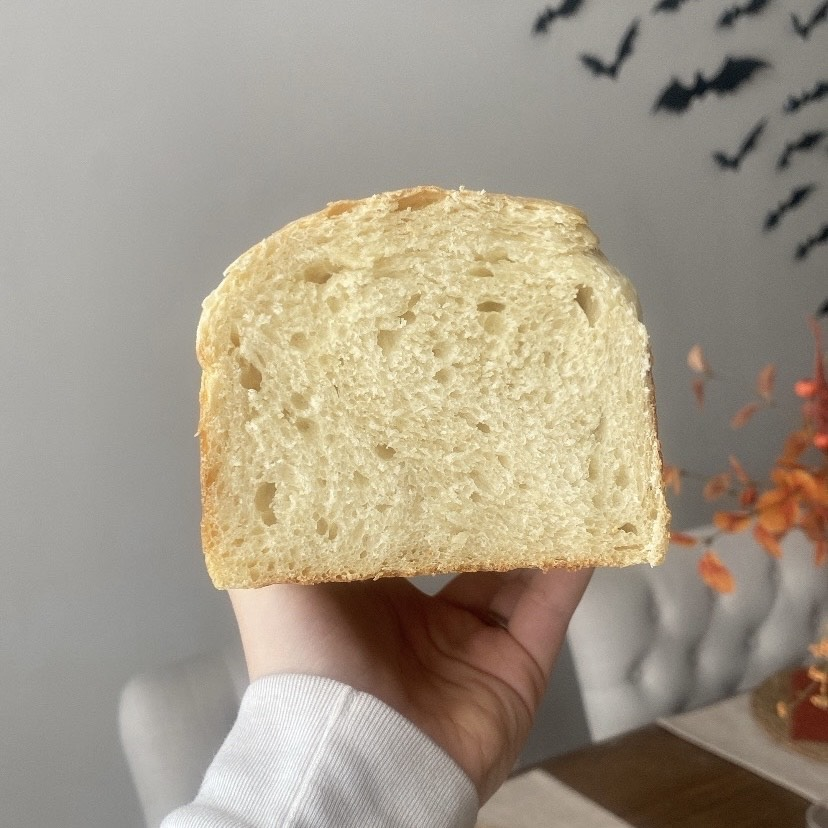

Sourdough Sandwhich Bread

Ingredients:
- 110 grams of sourdough starter
- 400 grams of warm water
- 90 grams of sugar/honey
- 700 grams of bread flour
- 30 grams of extra virgin olive oil
- 22 grams of salt
Links to some of the things I use
Instructions
- Add the warm water to your bowl, and then add your active sourdough starter.
You can confirm if your starter is ready to use by doing the “float test”. If
the starter floats in the water - You're good to go!
-
Next add your sugar/honey, flour, olive oil, and salt to the bowl. Mix the
ingredients with your Dutch whisk until a rough dough forms. Once the bulk
of the ingredients are combined, continue to incorporate the ingredients with
your hands until you have a shaggy dough
-
Cover your bowl with a wet towel or with saran wrap. If you use saran wrap,
be sure to poke some holes in the top
-
Every 30 - 45 minutes, perform “stretch and folds”. Stretch and folds are when
you pull up on one end of your dough to stretch it, fold it over the dough
that is left in the bowl, then turn your bowl 90 degrees. You will continue
this process and do it a total of 4 times. Then you will cover your dough again,
wait 30 minutes, and repeat the entire stretch and fold process 4 - 5 times.
Doing this strengthens the gluten in your dough, and will ensure that you have
a strong dough to work with!
-
After you have completed the 4 - 5 rounds of stretch and folds, allow your dough
to rest overnight on the counter or for 8 - 10 hours. Once your dough has doubled,
you can continue to the next steps.
-
Once your dough is ready, stretch it out on a floured surface. Then you will laminate
the dough. Laminating is when you gently stretch your dough into a rectangular shape,
fold the left side of the dough over to the middle, then fold the right side on top
of that. Then, roll up into a ball. This ball will then be rolled into a log shape
that will be about the size of your loaf pan
- Let your dough rest on the counter for 10 minutes covered
-
Place your dough seam side down in your loaf pan. This recipe is tweaked to fit my
standard size loaf pan. I have it linked if you want to try it out!
- Cover the pan with a damp towel, and let rest for 1-2 hours
- You can add an optional egg wash on top, but I typically skip this step
-
If you choose to score the top, just do a straight line down the center of the
top. This will make sure that you get better expansion, and that your bread
doesn't bust open at the doughs seam
-
Preheat your oven to 375, and bake for 40 - 50 minutes until the top is golden brown
- Wait to cut for at least an hour. It is best to wait until it's completely cooled
I store ours in a breadbox, and it stays soft for 4 - 5 days.
You could extend this time by storing your loaf in a bread bag!
You can also make multiple loaves and freeze them for later! They
are good in the freezer for 3 months. Just pull it out the night
before you want to use it, and it should be thawed by morning